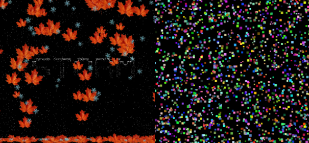
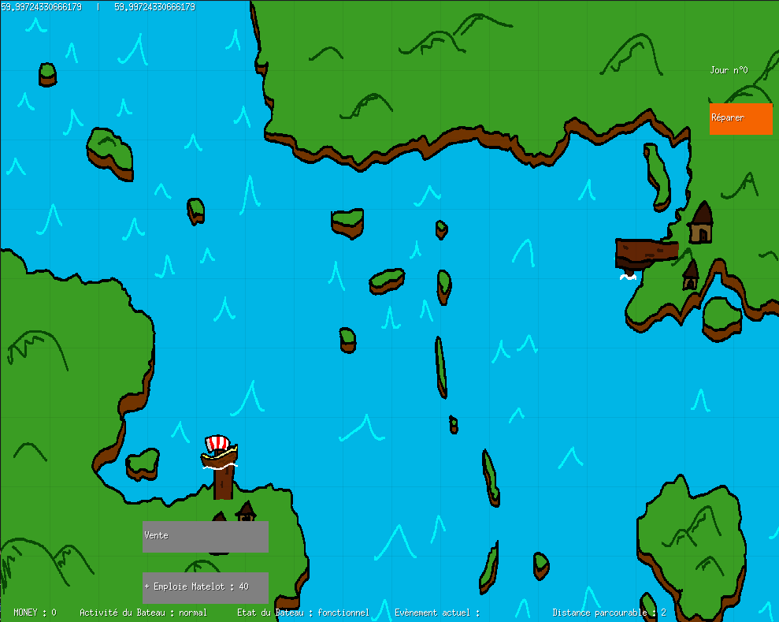

Je suis étudiant en développent web, logiciel, application, test et agilité. Bienvenue sur mon espace de création numérique.
Découvrir mes projets
L'objectif est de simuler un systeme de particules, pouvant, avec les différantes options, simuler des étincelles,une tempete de feuille d'automne et de neige, une fontaine, une pluie,etc...
Voir le projet →
Jeu "serieux" autour d'une ambiance viking, d'un bateau qui peche et d'un Capitaine qui doit gerer son bateau des evenements du micro/macro environement et une equipe de matelot. Le jeu se base autour du model PESTEL en économie.
Voir le projet →Passionné par l'univers du code et de la création numérique, je suis actuellement étudiant en informatique, spécialisé dans le développement web, logiciel et applicatif. Mon parcours m'amène à concevoir des solutions techniques robustes tout en intégrant les principes de l'agilité et du test logiciel pour garantir la qualité de mes projets. Curieux et rigoureux, j'aime explorer de nouvelles technologies (comme Go, Python ou Kotlin) et soigner l'expérience utilisateur (UI/UX) pour donner vie à des idées concrètes et performantes.
Envie d'en savoir plus ?
Télécharger mon CV !